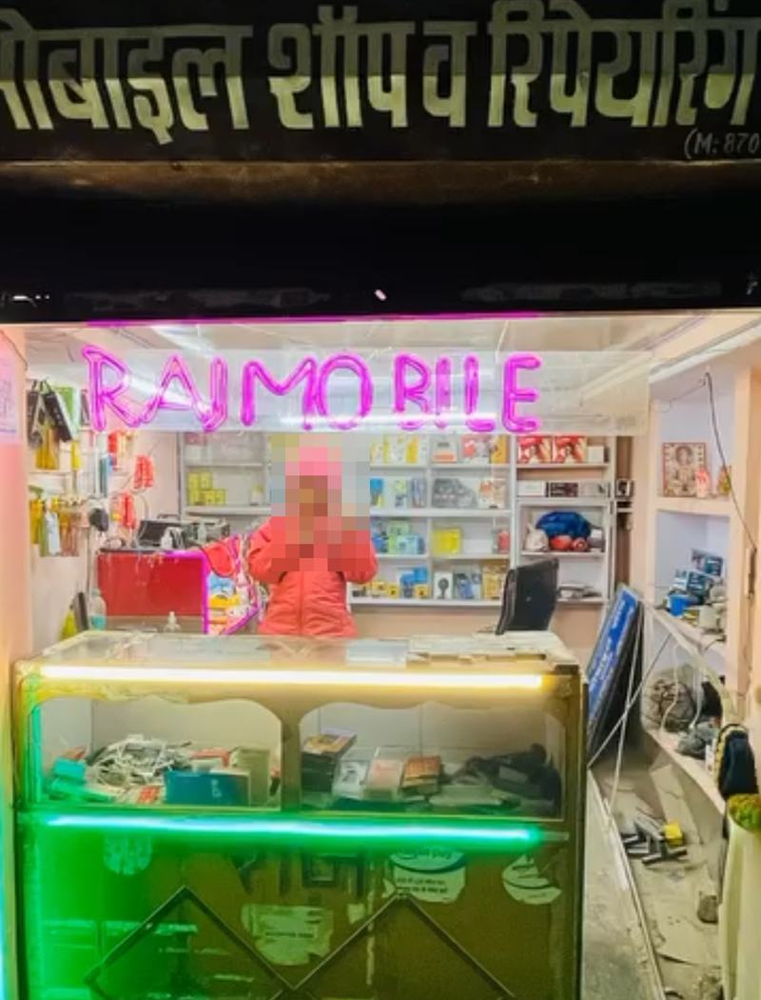

Android, iPhone and keypad phones – we repair them all. Walk in with a broken phone, walk out with a working one. Quality chargers, cables, OTG and Bluetooth audio available in the shop.
आपके हर मोबाइल की भरोसेमंद रिपेयरिंग।
From everyday faults to tricky problems, our experienced technician handles repairs on every kind of phone sold in India.
All Android brands and models, hardware and software faults.
Careful, professional repair for iPhones of all generations.
Basic and feature phones repaired – we haven’t forgotten them.
Cracked, dead or faulty screens and touch problems.
Battery drain, slow charging and charging port issues.
Hanging, slow phones, update and software problems.
Not sure whether your phone can be fixed? Call us or bring it in for a check.
Genuine-quality accessories at fair prices, right where you get your phone fixed.
Dependable chargers for everyday use.
Durable cables for charging and data transfer.
Connect pen drives and other devices to your phone.
Wireless headphones for music and calls.
Wired and Bluetooth earbuds to suit every budget.

Raj Kushwaha has run this shop for almost 17 years, repairing phones and helping local customers with the accessories they need. Come by any day of the week.
We stand behind what we sell.
Getting your phone repaired is easy.
Visit the shop or call us to describe the problem.
We inspect the phone and find the real fault.
You hear the cost and time before any work starts.
We fix it and test it before you take it home.
A shop stays open this long only by treating customers well.
We are open from 9 AM to 9 PM, all 7 days of the week.
Yes, we give a guarantee on chargers, batteries and cables.
Yes. We repair iPhones as well as Android and keypad phones.
Yes, we repair keypad phones along with all other phones available in India.
Chargers, USB cables, OTG, Bluetooth headphones and earbuds.
Send your phone model and problem on WhatsApp, call 87074 41342, or visit the shop. We will check the phone and tell you the cost first.
Write your name and the problem below, then tap the green button. WhatsApp opens with your message ready to send to Raj. You can also call 87074 41342.
Raj Mobile Repairing Centre · Owner: Raj Kushwaha
CW5R+X6 Naika, Uttar Pradesh
🕘 Open daily, 9 AM – 9 PM (all 7 days)
+91 87074 41342Tap below to open our location in Google Maps and get directions.
Plus code: CW5R+X6
📍 Get Directions